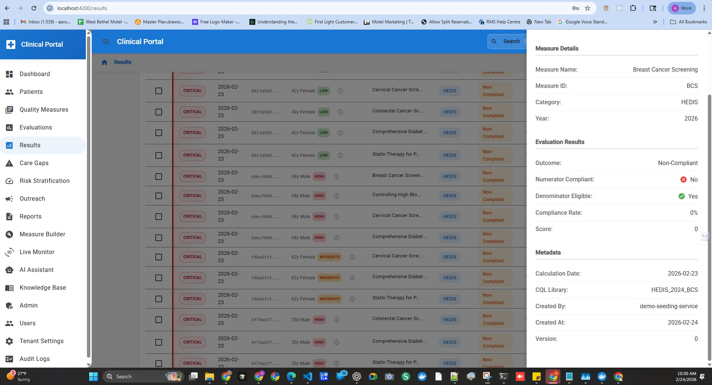
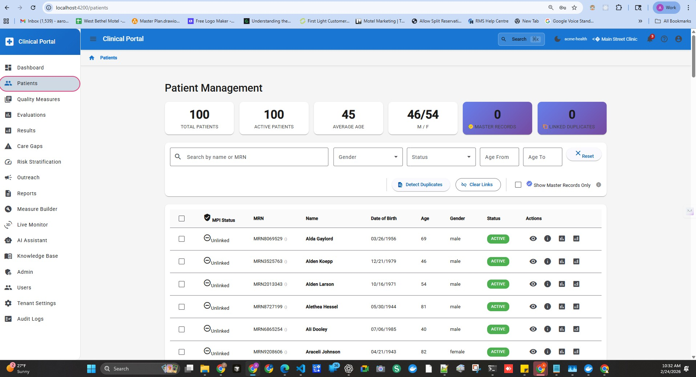
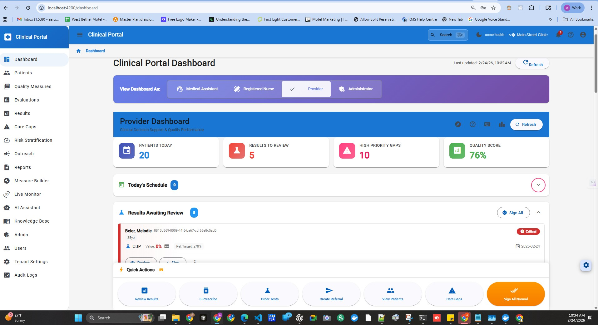
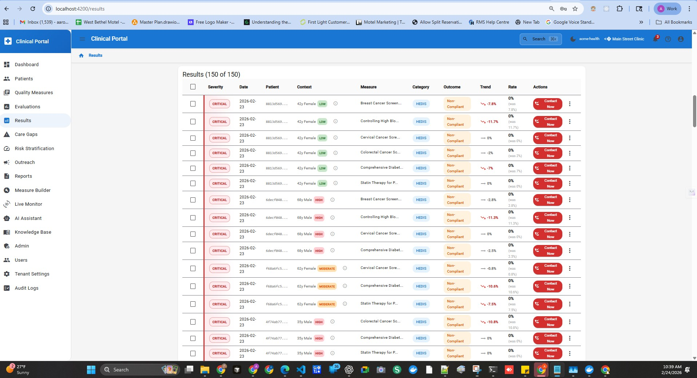
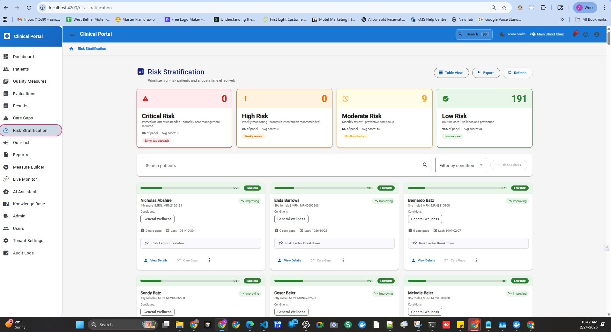

AI Solutioning in Healthcare Delivery
Healthcare platform delivery often fails at the seam between architecture and implementation. Plans are coherent, but execution drifts across teams, services, and timelines.
AI solutioning changes this when organizations adopt specification-first workflows. Instead of asking models to invent structure, teams supply architecture, contracts, and constraints up front.
HDIM applied this approach to a multi-service healthcare platform and demonstrated meaningful improvements in delivery speed, consistency, and validation readiness.
The Race Track FHIR assets and evidence reports show how communication, architecture, and runtime validation can stay aligned from narrative to implementation.
System Coming Together: Live Build Sequence
These are original laptop captures from February 24, 2026, showing the platform taking shape in real time while logic and workflows were being validated.





Architectural Leadership Through Delivery
This build was guided as an architecture program, not a design-only sprint. The sequence below shows how platform foundations, proof systems, and go-to-market surfaces were intentionally connected.
Release Storyline (January-February 2026)
- January 13, 2026: Production GTM landing baseline established with validation cleanup and deployment hardening (
0bb549d7c). - February 17-19, 2026: Performance and reliability narrative grounded in load tests, SLO workflows, and evidence-linked content (
e6f1531e1,15b66d20a,5d4ffea7c). - February 22, 2026: Race Track FHIR A/B proof loop operationalized with validators, timestamped artifacts, and deployment automation (
3e24bec9f,4cb1a4bd9). - February 23, 2026: Care transitions pilot integrated across landing and research surfaces to close architecture-to-commercial continuity (
bb422d3c7). - February 23, 2026: Vercel and lead API runtime hardening completed for cleaner production behavior (
f2b52c9de).
This is the core pattern: architecture decisions are published as verifiable product behavior, then reinforced by automated validation before each release point.